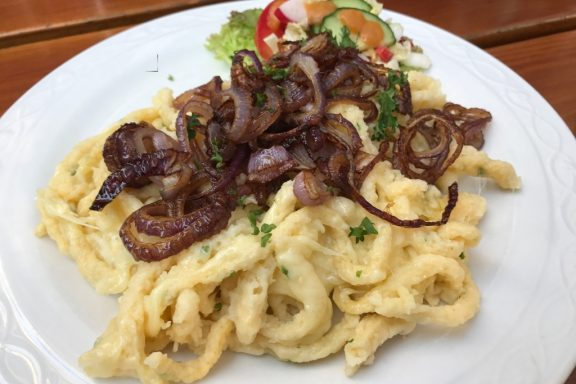
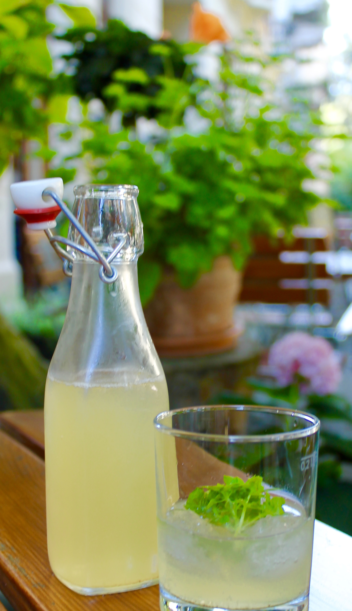
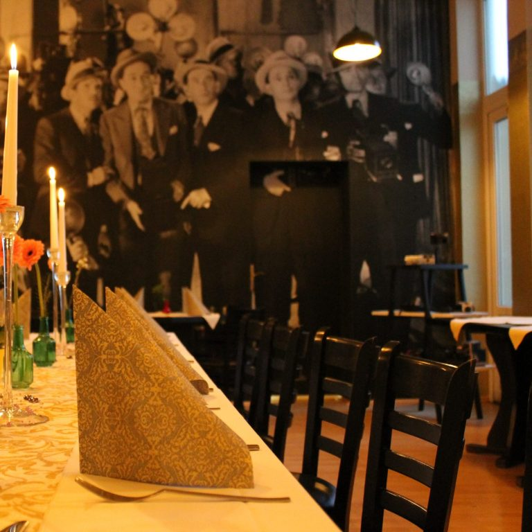
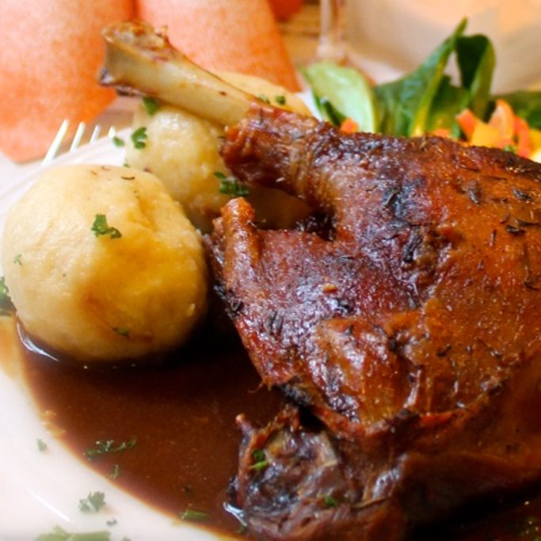
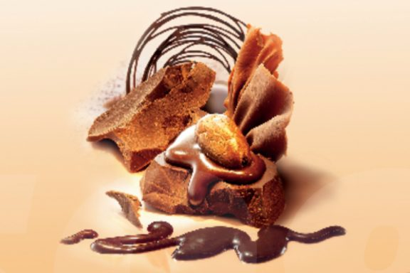
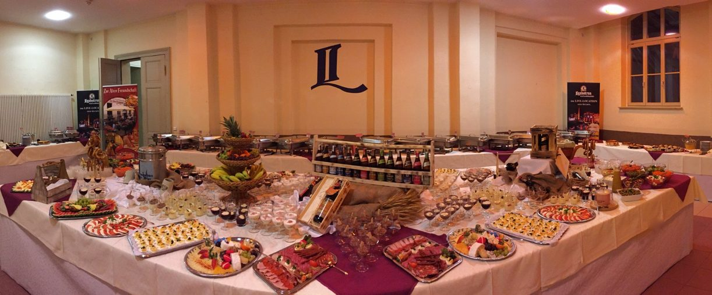

Regionale Küche
Herzhafte Gerichte, saisonal abgestimmt und frisch zubereitet.
willkommen in unserer gemütlichen Ecke
Regionale Küche, gemütliche Räume, Kegelbahn und Catering aus Görlitz. Ein Haus für gutes Essen, Feiern und gemeinsame Abende.


über uns
Bei uns finden Gäste gemütliche Räume für gemeinsame Abende, Familienfeiern und gesellige Runden. Ob Essen im Restaurant, ein Abend auf der Kegelbahn oder ein Buffet für Ihren Anlass: Wir kümmern uns gern darum, dass es zusammenpasst.
Unsere Gaststätte lebt von warmen Räumen, guter Küche und Momenten, in denen man gern noch ein bisschen länger sitzen bleibt.
Räume entdeckenfrisch aus Küche und Haus
aus unserer gaststätte

Sommerliche Erfrischungen mit frischer Minze und verschiedenen selbstgemachten Geschmacksrichtungen.
Anfragen
Festlich gedeckte Räume für Weihnachtsfeiern, Vereinsrunden und Jahresabschluss-Abende.

Zur Saison servieren wir klassische Gänsegerichte für gemütliche Runden und festliche Abende.
was wir anbieten
einblicke
Ob kleiner Abend, Familienfeier oder festliche Runde: Unsere Räume bieten Platz zum Ankommen, Genießen und Zusammensitzen.
Reservieren


kontakt
Für Reservierungen, Kegelbahntermine und Catering erreichen Sie uns telefonisch, per E-Mail oder über die Reservierungsseite.
öffnungszeiten
* Feierlichkeiten sind auf Anfrage auch außerhalb dieser Zeiten möglich.
Zur Reservierung